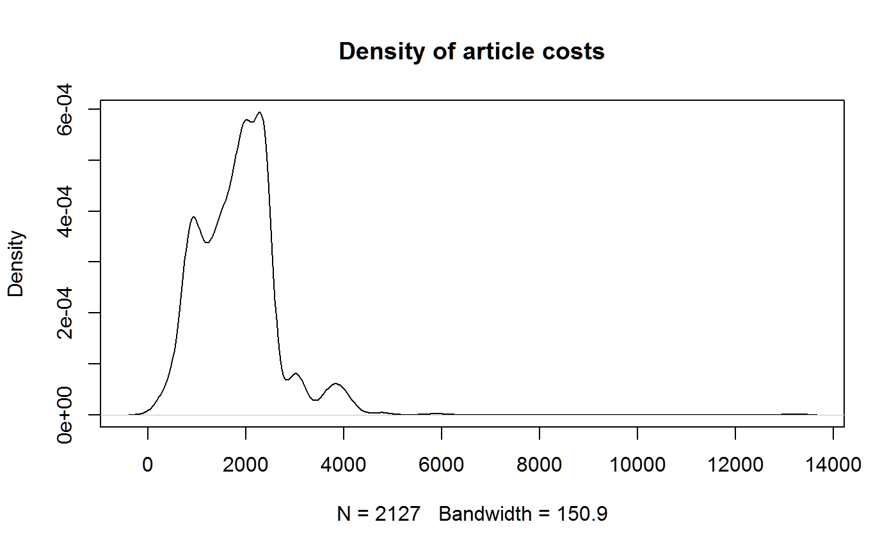

journal_cost.RmdThis data was downloaded 15 Apr 2019 from https://figshare.com/articles/Wellcome_Trust_APC_spend_2012_13_data_file/963054. See Kiley (2014). License: CC-BY.
Inspiration from http://www.opiniomics.org/biologists-this-is-why-bioinformaticians-hate-you/
library(readxl)
datfile <- system.file("messydata", "University_returns_for_figshare_FINAL.xlsx", package="untidydata2")
dat <- read_excel(datfile)First thing I always do when exploring data is change the variable names to be nice. No spaces, all lowercase, short, distinct. This makes typing more pleasant while exploring the data.
## [1] "PMID/PMCID"
## [2] "Publisher"
## [3] "Journal title"
## [4] "Article title"
## [5] "COST (£) charged to Wellcome (inc VAT when charged)"## # A tibble: 6 x 5
## id publisher journal article cost
## <chr> <chr> <chr> <chr> <dbl>
## 1 "PMC33789~ Elsevier Academy of N~ Parent support and par~ 2380.
## 2 PMCID: PM~ ACS (Amercian Che~ ACS Chemical~ A Novel Allosteric Inh~ 1295.
## 3 PMCID: PM~ ACS (Amercian Che~ ACS Chemical~ Chemical proteomic ana~ 1295.
## 4 <NA> American Chemical~ ACS Chemical~ Discovery of ß2 Adrene~ 947.
## 5 PMID: 240~ American Chemical~ ACS Chemical~ Discovery of an allost~ 1268.
## 6 : PMC3805~ American Chemical~ ACS Chemical~ Synthesis of alpha-glu~ 2287.The first column contains a weird collection of identification data.
## [1] "PMC3378987\r\n" "PMCID: PMC3780468"
## [3] "PMCID: PMC3621575" NA
## [5] "PMID: 24015914 PMC3833349" ": PMC3805332"
## [7] "PMCID:\r\n PMC3656742\r\n" "PMCID: 3584654"
## [9] "23373658" "PMCID:\r\n PMC3727331\r\n"
## [11] "PMCID: PMC3565438" "PMCID: PMC3668577"
## [13] "PMCID: PMC3606566" "\r\n PMC3498934"
## [15] "PMID:22993091 PMC3447403" "PMC3087623"
## [17] "PMC3808818" "PMID: 23828613 (July 2013 Epub)"
## [19] "PMC3374517" "PMC3549237"
## [21] NA "PMC3661931"
## [23] "3535376" "PMC3798121"
## [25] "21624095 PMCID: PMC3734623" "In Process"
## [27] "23734913" NA
## [29] NA NAThere are backslashes. Sometimes a colon is used. Sometimes a space is used. The data is a mess. Let’s have a look at all the non-numeric strings:
##
## Attaching package: 'dplyr'## The following objects are masked from 'package:stats':
##
## filter, lag## The following objects are masked from 'package:base':
##
## intersect, setdiff, setequal, union## [1] "PMC" "PMCID: PMC"
## [3] NA "PMID: "
## [5] ": PMC" "PMCID:\r\n PMC"
## [7] "PMCID: " ""
## [9] "\r\n PMC" "PMID:"
## [11] "In Process" "print published August "
## [13] "published Sept " "PMCID: PMC:"
## [15] "Not yet available" "PMCID:PMC"
## [17] "PMC " "pub Aug "
## [19] "in press" "Pub July "
## [21] "published August " "PMCID: PMC "
## [23] "Epub ahead of print pub Feb " "Epub ahead of print - june "
## [25] "Epub ahead of print pub Nov " "Epub ahead of print pub Jan "
## [27] "Epub ahead of print March " "PMID"
## [29] "e-pub" "print in press"
## [31] "print not yet published" "Published Sept "
## [33] "Epub ahead of print April " "Epub ahead of print - June "
## [35] "-" "epub"
## [37] "Monograph chapter, not in PMC" "print due Sept "
## [39] "PMID : " "Print not yet pub?"
## [41] "Epub ahead of print - May " "Pending"
## [43] "published jun " "(PMCID:PMC"
## [45] "PMCID: PMC" "PMC in progress"
## [47] "Epub ahead of print pub March " "PMCID:"
## [49] "Epub" "PMID: "
## [51] "Published " "Not yet published"
## [53] "\r\nPMC" "Pub online first July "
## [55] "not yet published in print" "Pending - Epub April "
## [57] "not yet published" "PMCID: PMC"
## [59] "Pending PMID" "PMCID:ID is PMC"
## [61] "in press - due August " "Epub ahead of print - April "
## [63] "Epub ahead of print pub Dec " "PMCID"Maybe there’s a better way to do this, but at this point I just start working through the problems, trying to get some consistency to the point that we’ll be able to extract the numeric value of the ID. Note that PMCID and PMID are different, and some of the journal articles have both like this: “PMID:21940062 PMC3814186”.
dat0=dat
dat=dat0
dat <- mutate(dat, id=str_replace(id, "\\r\\n", ""))
dat <- mutate(dat, id=str_replace(id, "PMCID: *PMC", "PMCID:PMC"))
dat <- mutate(dat, id=str_replace(id, "\\(PMCID:PMC", "PMCID:PMC"))
dat <- mutate(dat, id=str_replace(id, "PMC in progress", ""))
dat <- mutate(dat, id=str_replace(id, "Pending PMID", ""))
dat <- mutate(dat, id=str_replace(id, "PMID :", "PMID:"))
dat <- mutate(dat, id=str_replace(id, "PMCID:ID is PMC", ""))
dat <- mutate(dat, id=str_replace(id, "PMC ", "PMC"))
dat <- mutate(dat, id=str_replace(id, "PMC:", "PMC"))
dat <- mutate(dat, id=str_replace(id, ": PMC", "PMC"))
dat <- mutate(dat, id=str_replace(id, "PMCID: ", "PMCID:"))
dat <- mutate(dat, id=str_replace(id, " PMC", "PMC"))
dat <- mutate(dat, id=str_replace(id, "PMID: ", "PMID:"))
# unique(str_extract(dat$id, "PMCID:PMC.*")) # PMCID: is redundant
dat <- mutate(dat, id=str_replace(id, "PMCID:PMC", "PMC"))
# unique(str_extract(dat$id, "PMCID:.*"))
dat <- mutate(dat, id=str_replace(id, "PMCID:", "PMC"))
# unique(str_extract(dat$id, "PMCID.*"))
dat <- mutate(dat, id=str_replace(id, "PMCID", "PMC"))
# unique(str_extract(dat$id, "PMCID.*"))
# Now focus on PMID
# unique(str_extract(dat$id, "PMID.*"))
dat <- mutate(dat, id=str_replace(id, "PMID:", "PMID"))
# Inspect all PMID and PMCID strings. They look clean for extraction.
# unique(str_extract(dat$id, "PMC.*"))
# unique(str_extract(dat$id, "PMID.*"))Now we extract the numeric values of the IDs
Whew, that was a lot of work. Unfortunately, the publisher names are an even bigger mess. Here are a few examples (assuming the publisher names are not mis-spelled!):
## [1] "BioMed Central Limited" "BioMed Central"
## [3] "BioMed central" "Biomed Central"
## [5] "BioMed Central Ltd"## [1] "American Chemical Society"
## [2] "AMERICAN CHEMICAL SOCIETY"
## [3] "American Chemical Society Publications"
## [4] "American Chemical Society Petroleum Research Trust"## [1] "Elsevier" "Elsevier/Cell Press"
## [3] "Elsevier B.V." "ELSEVIER"
## [5] "Elsevier (Cell Press)" "Elsevier / Cell Science"
## [7] "Elsevier)" "Elsevier Ltd"At this point, in the spirit of getting things done fast (if not elegantly), I would probably perform the following steps: 1. Extract all the unique publisher values 2. Export to a CSV file called “publishers_cleaned.csv” 3. Open the CSV file in Excel (or other tool) 4. Add a second-column with my hand-entered, best-judgement of a standard publisher name 5. Bring the data back into R 6. Lookup the original publisher name in the publishers_cleaned data and return the standard name.
Again, it’s not elegant, and it would not scale up very well to the journal names (which have even more categories!). There is actually an add-in tool in Excel which can help with this task: https://www.microsoft.com/en-us/research/project/transform-data-by-example/.
Eventually, we might like to look at how costs vary among publishers. For now, here’s a simple density plot of all the article costs.

Kiley, Robert. 2014. “Wellcome Trust APC spend 2012-13: data file,” March. https://doi.org/10.6084/m9.figshare.963054.v1.